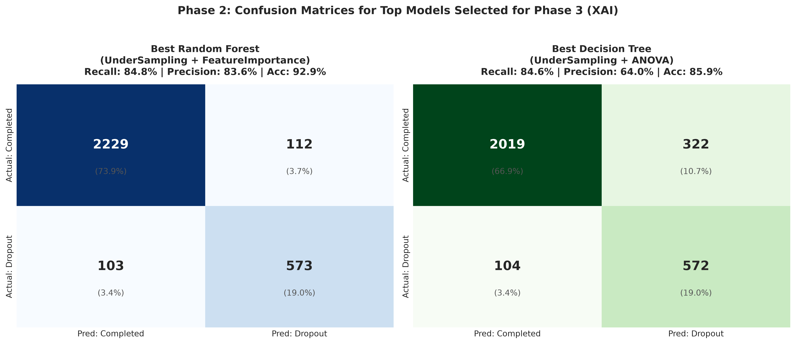

Explainable AI Governance Command Center
Integrated Institutional Intelligence Platform: Empirical Benchmarking, Early-Warning Validation, Modality Base-Rate Audits, Global & Local Explainability (SHAP & LIME), Algorithmic Equity Auditing (Gender, Race, Income), and Human-in-the-Loop Governance Protocol.
1. Early-Warning Validation: Active Students (GPA > 0) vs. Post-Mortem Records (GPA == 0)
Academic Rigor Check: Disaggregates students with recorded zero GPAs (who already ceased attendance administratively) from active students. Confirms that the model maintains 80.8% recall and 82.5% precision on active students without relying on trivial post-mortem zeros.
| Student Evaluation Cohort | Sample Size | Actual Dropout Occurrence | Model Recall (Sensitivity) | Model Precision |
|---|---|---|---|---|
| Early-Warning Active Students (GPA > 0) | 2722 students | 490 (18.0%) | 80.8% | 82.5% |
| Administrative Post-Mortem Records (GPA == 0) | 295 students | 186 (63.1%) | 95.2% | 86.3% |
| Combined Full Test Set | 3017 students | 676 (22.4%) | 84.8% | 83.6% |
2. Course Modality Base-Rate Audit (Traditional High School vs. Adult Education)
Institutional Context: Evaluates performance across program types. Traditional daytime high school students (Integrado) have a baseline dropout rate of 16.3%, whereas adult/evening students (Subsequente and EJA) experience 34.6% to 39.5% baseline dropout rates due to employment and family commitments. The model calibrates sensitivity appropriately across all formats.
| Course Modality / Format | Total Students | Actual Dropout Baseline Rate | Model Flagging Rate | Model Recall (Sensitivity) | Model Precision |
|---|---|---|---|---|---|
| Integrated High School (Integrado - Traditional Teens) | 2015 students | 16.3% | 16.7% | 79.9% | 78.0% |
| Subsequent Technical (Subsequente - Post-High School) | 763 students | 34.6% | 34.1% | 89.0% | 90.4% |
| Concurrent Technical (Concomitante - Dual Schooling) | 153 students | 32.7% | 37.9% | 94.0% | 81.0% |
| Youth & Adult Education (Integrado EJA - Adults) | 86 students | 39.5% | 36.0% | 85.3% | 93.5% |
3. Empirical Model Evaluation Visualizations

Recall and Precision rankings across all tested algorithms.

Confusion matrices showing held-out true positive and false alarm rates.
1. Global SHAP Visualizations (English Feature Names)

Global Beeswarm: Blue (low values) on GPA and attendance pull sharply toward dropout.

Mean |SHAP| Bar: Relative magnitude weights of all 15 selected features in English.
2. Feature Attribution Ranking Table (Translated)
| Rank | Feature Name (English) | Mean |SHAP Value| | Relative Weight |
|---|
Interactive Student Case Audit & Counterfactual Intervention Simulator
Select an individual student from the held-out cohort to inspect their real-time model probability, personalized push factors, human-readable student profile, and dynamic What-If sensitivity sliders.
12 diverse benchmark cases covering High-Risk dropouts, Borderline students walking the line, Resilient graduates, and demographic variations.
Visual Multi-Slice Fairness Audit

1. Quantitative Fairness Audit Matrix (Single Attribute Slices)
| Protected Dimension | Comparison Groups | Sample Sizes | Disparate Impact | Statistical Parity | Equal Opp. (Recall Parity) | Four-Fifths Compliance |
|---|---|---|---|---|---|---|
| Gender | Priv: Male Unpriv: Female |
1417 / 1600 | 0.707 | -0.079 | 87.4% vs. 81.7% (-0.057) | UNDER-FLAGGED (<0.80) |
| Race / Ethnicity | Priv: White (Branca) Unpriv: Brown/Black/Indigenous (Parda/Preta) |
432 / 2584 | 1.180 | +0.035 | 79.1% vs. 85.6% (+0.065) | PASSED (Fair) |
| Household Income | Priv: > Median (R$ 930) Unpriv: <= Median (R$ 930) |
1508 / 1509 | 1.411 | +0.077 | 82.5% vs. 86.4% (+0.039) | OVER-FLAGGED (>1.25) |
| Age Cohort | Priv: Traditional (<= 20 yrs) Unpriv: Adult / Non-traditional (>= 21 yrs) |
1388 / 1629 | 1.590 | +0.102 | 82.1% vs. 86.4% (+0.043) | OVER-FLAGGED (>1.25) |
| Digital Access | Priv: Owns >=1 Laptop Unpriv: No Laptop (0) |
883 / 2134 | 1.403 | +0.071 | 77.8% vs. 87.0% (+0.092) | OVER-FLAGGED (>1.25) |
2. Intersectional Demographic Subgroup Fairness Matrix (100% Real Student Data)
Audits model behavior across overlapping demographic slices (Gender × Race × Household Income) on all 3,017 real test students. No synthetic data used.
| Intersectional Subgroup Slice | Real Student Count | Actual Dropout Rate | Model Flagging Rate | Model Recall (TPR) | Model Precision |
|---|---|---|---|---|---|
| Female | Minority | Low Income | 753 students | 23.0% | 23.5% | 85.5% | 83.6% |
| Female | Minority | High Income | 634 students | 16.2% | 14.7% | 75.7% | 83.9% |
| Male | Minority | High Income | 628 students | 22.8% | 24.7% | 88.8% | 81.9% |
| Male | Minority | Low Income | 569 students | 29.2% | 30.8% | 89.2% | 84.6% |
| Male | White | High Income | 127 students | 21.3% | 20.5% | 81.5% | 84.6% |
| Female | White | High Income | 118 students | 11.0% | 8.5% | 69.2% | 90.0% |
| Female | White | Low Income | 94 students | 23.4% | 25.5% | 86.4% | 79.2% |
| Male | White | Low Income | 93 students | 31.2% | 26.9% | 75.9% | 88.0% |
Institutional AI Governance Charter & Human-in-the-Loop Protocol
- Strictly Advisory Designation: The AI system provides risk scores solely to trigger personalized supportive counseling and tutoring. It is legally prohibited from being used to deny enrollment, expel students, or automate disciplinary actions.
- Mandatory XAI Review: Prior to reaching out to any flagged student, counselors must inspect the student's SHAP/LIME factor attribution card to ensure interventions address the root cause (e.g., transportation aid for low attendance vs. peer tutoring for low GPA).
- Student Right to Explanation & Appeal: In compliance with international data protection laws (LGPD / GDPR / FERPA), any student has the right to inspect their risk evaluation and request a human review of their academic trajectory.
- Semi-Annual Fairness Recalibration: The AI Governance Committee must re-evaluate Disparate Impact and Equal Opportunity every academic semester across gender, race, and socioeconomic brackets to safeguard against demographic concept drift.
- Actionable vs. Immutable Distinction: Counseling plans must focus exclusively on mutable, actionable levers (Attendance and Tutoring) rather than penalizing students for historical or unchangeable background traits (Age, Modality, Prior Failures).